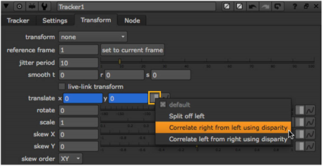

When rotoscoping, creating paint effects, or doing other operations dependent on image locality, you can have changes made to one view automatically reproduced in the other. This applies to the RotoPaint node, Roto node and any nodes, groups, or gizmos that have controls for x and y coordinates.
To reproduce changes made with the above nodes, groups, or gizmos, you need a disparity field that maps the location of a pixel in one view to the location of its corresponding pixel in the other view. You can create a disparity field using the O_DisparityGenerator plug-in, which is included in the Ocula plug-in set, or a 3D application. Once you have the disparity field, you can store it in the channels of an .exr file or use the ShuffleCopy node to add the disparity channels in the data stream where you need them.
For more information on reproducing paint strokes, Bezier shapes, or B-spline shapes, see Reproducing Strokes/Shapes in Other Views.
Whenever there are values in any x or y control in Nuke for one view, you can automatically generate the corresponding values for the other view. This is true for both nodes and gizmos. For example, you can use a Tracker node to track something in one view, and then have the track’s x and y position generated for the other view automatically.
| 1. | Make sure there is a disparity field upstream from the image sequence you are manipulating. If the image sequence is an .exr file, the disparity field can be included in its channels. Otherwise, you can use a ShuffleCopy node or Ocula’s O_DisparityGenerator plug-in to add it in the data stream. |
| 2. | Insert a node that has an x and y control after the image sequence you are manipulating. |
| 3. | Attach a Viewer to the node you added in the previous step, and make your changes in one view. |
| 4. | From the View menu next to the x and y controls, select Correlate [view] from [view] using disparity, for example Correlate right from left using disparity. This generates the corresponding x and y values for the other view. |

If you have Foundry’s Ocula plug-ins installed, you can also select Correlate [view] from [view] with Ocula. This way, extra refinements are made when creating the corresponding x and y values, and the results may be more accurate.
| 5. | If you want to adjust the x and y values further, you need to adjust both views independently. Adjustments you make to one view are not automatically generated for the other. |
|
|